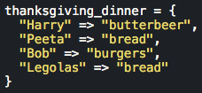
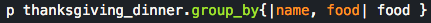
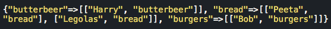

Phase 0: Week 5
Enumerable Methods ... with a side of cranberry sauce.
November 2nd, 2015
Honestly what other purpose does cranberry sauce even have outside of November?
It IS that time of year, friends, which officially means that everyone starts aggresively playing Christmas songs. What I personally am looking forward to, is the Thanksgiving dinner I have planned with my friends! We've had this planned for a while now:

You have a lot of questions: Why isn't this any of this real Thanksgiving food? Why are your only friends all guys? Seriously, you included cranberry sauce in your title and it's not even on the list? You are right to have these questions, but looks like you forgot the most poignant question of all...
This hash only has four people so this is a fairly simplified example, but in case you didn't notice, two people are assigned to the same value "bread". Now this would be fantastic if we were purposely trying to have the worst Thanksgiving in existence, but we are trying to make this work. Now lets also think if we had a data structure filled with a LOT more data -- like hypothetically if I were a lot more popular (or just mass invited all of my acquaintances on Facebook because lazy) there would be several more keys in the hash with associated values that indicated the food that they were planning on bringing. Now here is another hypothetical question within the alternate universe where I'm popular: How would I be able to quickly check if more than one person was bringing the same dish? Ahh yes, I knew the title of this post didn't completely go to waste.

#group_by
The enumerable method group_by {|obj| block} groups the data in the hash via the result of the block. In this case I've simply grouped it by food to very clearly show who is bringing what. The output below shows that the group_by method returns a hash in which the keys are the result from whatever you had indicated in the block (in my case, food) and the values are the arrays of key/value pairs that make up the hash (thanksgiving_dinner). Ah yes, that's much more convenient. I can now CLEARLY see that Legolas and Peeta are both bringing bread!

Perhaps I should tell one of them to bring the cranberry sauce?
I know this was an incredibly simplified example because I literally created five keys, but I can only imagine the ways in which grouping data would be advantageous to certain programs. For example, I could have taken everyone's names and distance off of Tinder and grouped by their distance in order to find who was closest to me. Not sure that I could handle an LDR.
That's all for now on this particular enumerable method. I'm sure I'll be covering more of them later in the future so check back soon for updates! Happy Thanksgiving in advance!